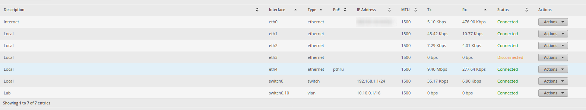
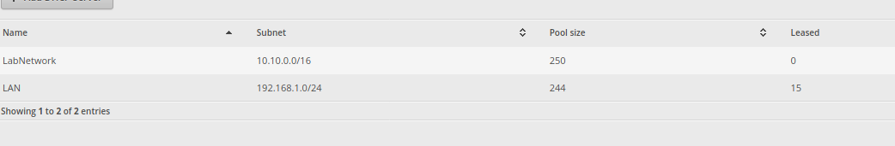
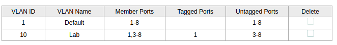
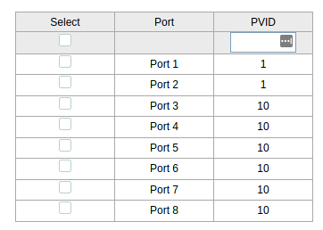

Network Segmentation

Network Segmentation
Hello everyone,
I went on another digital adventure that I would like to share with you all. The adventure I went on was to segment my network. If you follow me on twitter you will know I switched to a DevOps career path back in September. I have learned a lot in the few months that I have worked in the DevOps field. One of the things though that Corporate IT keeps bringing up is vlans. Virtual Local Area Network(s). I had configured a lot of vms at this point to be on a vlan that it was designated to go into but it raised a question to me. Why would you put something in a vlan. Segmenting it away from everything else.
Up until this time I have only ever worked in one network. In AWS it was a vpc (Virtual Private Cloud), my home network whatever the router came setup with. I had never worked in a network that had more than one network. I remember in college setting up a few vlans for my CCNA course but that was about all the exposure I had with vlans. Now segmenting a network might not just be a vlan or a vpc it can be a router configured to be another network and then routed through a top router connected to the internet. I have never touched something like that and seems little more complicated. That was scheduled to be the 2nd or 3rd CCNA course but I never got that far. Anyway back to the important bits. So at work I kept hearing about vlans and setting up vms to live in them.
I was wondering what is the importance of segmenting via a vlan so I began to research as I do when I have questions. I came across many reasons but the big one I see is limiting the damage a hacker can do. Other reasons also include organizing your network layout. Vlans are different virtual networks. The router looks for tagged packets and puts them in the correct virtual interface and lets them communicate with anything else in the same vlan. Vlans can also go out to other networks if nothing limits them. This is where the power comes in. You can put a firewall between these virtual interfaces and then traffic can only flow to certain nodes, ports, or range of both in another network (vlan or not). So with a firewall and vlan combo you can easily limit where a hacker can go after getting into your system. Now this is not fool proof. If your firewall has configuration to allow from that network to another network the attacker might pivot through there. Also if they get into the router than there is nothing you can do to limit them unless it is that router behind router thing. Even then most people share creds between machines so that is probably not a great protection anyway. With that being said lets move on to the implementation.
Figuring it out
How I figured all this out was not just internet research. If that was the case this post would be very short and boring. I had to experiment. If I just read papers on a topic how do I know it is true if I don’t see it working. I also had other reasons why I wanted a working example. Like I have been wanting to host a minecraft or terraria server but I don’t want to expose a server to the internet that could get pwned (hacked) and then allow the attacker to pivot through my network to my personal information. So I wanted to segment my home lab stuff away from everything else so I can expose just my home lab. If that gets owned the worst they can do is annoy me that I have to reset everything and put all my services back after I am done of course after I unplug my router and kill the service(s) they got in through. Then I can work on patching those and getting back up and running. So how I achieved this was having a fancy router.
Mostly kidding, a lot of consumer routers come with built in support for vlans. If your router does not support vlans than you can look into flashing your router to something like DD-WRT to get all the features you could ever possibly want. The router I have costs around $60 USD. It is the edge router x. Now this router does not come with wifi so you will need to grab a wireless access point to connect to it via wifi. I recommend the Ubiquity AP AC lite. That is what I got and I get pretty good range out it and if you get more than one they support meshing (More on this in later post). Although the down side is I could not get the AP to go on to a vlan (probably missing a config somewhere, I am human) so I left it on the already setup 192.168.1.0/24 that the network setup wizard creates. The last bit of it that I needed was an unmanaged switch. These can be tricky to setup but google and youtube can probably get you going. Once it is up and connected to the network it will allow you to config the vlan to each port.
Now these steps are vague because every router is different. You will need to lookup how to do each part on your router but the premise stays the same. I went on to the router and had it create a virtual interface on my switch0 interface because that is what all the ports except port eth0 was going to. The interface eth0 is my wan port and goes out to the internet. I told the new virtual interface to be a 10.10.0.0/16 address range. This is a huge network, although my homelab tends to run a lot of services so being able to spread them out is pretty cool. I went to the services tab and made a DHCP pool starting from 10.10.2.5 through to 10.10.2.250 for that vlan interface and I attached the DHCP service to the same interface. I also took this time to expand my other DHCP pool to pretty much the whole 192.168.1.0/24. After all this I then went to the switch to configure it to tag packets.
 The switch is where my packets are going to be tagged before they get sent to router so they end up going to the correct interface. First I configured port 1 to be my tagged port, I have heard this get called the trunk port on youtube videos so that is probably the official term but I could be wrong please feel free to correct me in the comments. After that I made ports 3 through to the last one which is 8 an untagged port. This means anything coming to that port will be untagged but then get tagged when it goes through port 1 to the router. My switch is a TP Link 8 port unmanaged switch. The interface was a little weird but after some playing around I got it working.
I connected my first server to port 3 and turned it on. I saw it come up and in the routers DHCP leases I saw it get an ip. Side note before I started this process I made sure I configured everything to DHCP so I could see them get an ip assigned and go fix it with a static ip later. End side note. I was able to ssh to the box and then correct it to a static ip that I was happy with. I repeated this for each server until they were all configured. Once that was done I started testing to see what they could see and yep it was pretty much still a flat network. I could ping and connect to all the computers including my nas which was port 1 on the switch that I purposely left out of the vlan.
I went back to the router and configured the firewall to have a default policy that anything on the lab network was accepted. This was done so the boxes on the lab network could reach out to the internet and I would not have to say all the ranges of the internet was traffic allowed out. I made the second rule to drop everything if the ip matched a 192.168.1.0/24 range. This made it so the boxes on the lab network could not reach out. Although this also blocked me from getting back requests. So I made another rule that allowed established connects to come through so if I made a web request from my lan to lab I would get the response back but my lab network still could not start the connection so this is working exactly how I wanted it. I got lucky the way the ruleset plays out with how I configured it. If you are not as lucky make sure the first rule is the established connection allowed to come back. Then the blocking connection to Lan IP Range comes last.
Put a bow on it
All and all I have learned that networking is not as complicated as I thought. I mean it can get complicated fairly quick but if you understand what is happening under the hood it helps a lot. If anyone wants a proper tutorial rather than a ramblings of how I set it up let me know and I can make a post that is more tutorial than blog post. This lab setup needed to happen because the docker repo requires TLS certs (unless I wanna configure all the boxes to not be secure). I am trying to keep my homelab shenanigans cheap. So if I can setup something for free I’ll try to make it happen. The next part that I wanna setup is lets encrypt so I can start getting some free certs. Now this can be done through dns challenges so I might not need an outside connection but considering my dns for my domain is outside my network internal domains might seem silly in the public facing DNS. So I might have to setup a tunnel between an internet node on something like Linode, and my homelab so that certbot can function.
Thanks for reading! have a great year!
Notes
Cover Image Artist: pixabay
Cover Image: https://www.pexels.com/photo/abstract-art-blur-bright-373543/